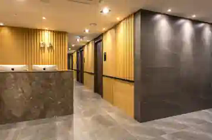

01
自然な日本語で細かく相談
写真や参考イメージを見ながら、気になる部位や理想の印象を日本語で整理します。
SEOUL · JAPANESE COUNSELING
「うまく伝わるかな」という不安から寄り添います。DA美容外科の日本語カウンセリング担当・キム・ヨンスが、渡韓前のご相談から来院、帰国後の連絡まで一つずつ分かりやすくご案内します。
相談内容がまだ決まっていなくても大丈夫です。LINEから日本語でご連絡ください。
Personal counselor
キム・ヨンス チーム長は、日本のお客様に向けたカウンセリングと院内コミュニケーションを担当。特に輪郭に関するご相談を数多く整理し、希望や不安を医療陣へ正確に伝える橋渡しを大切にしています。
「聞きづらいことほど、遠慮なく日本語で話してください。納得できるまで一緒に整理します。」
キムチーム長はカウンセリング・通訳・日程調整・ご案内を担当します。診断、適応判断、手術方法の決定および医療行為は担当医師が行います。
Why Yeonsu
専門用語が多い美容医療だからこそ、言葉の正確さと相談のしやすさを両立。希望だけでなく、迷っている点や心配な点もそのままお聞かせください。
写真や参考イメージを見ながら、気になる部位や理想の印象を日本語で整理します。
言いにくいニュアンスや優先順位をまとめ、診察時に確認したい内容を医療陣へ伝えます。
経過について確認したいことがある場合も、病院への連絡窓口として日本語でサポートします。
Facial contour counseling
顔立ちの印象は一つの部位だけで決まるものではありません。お悩み、希望、ダウンタイム、渡韓日程などを伺い、医師に相談するためのポイントを整理します。
正面と斜め、横顔で気になる点を写真とともに整理し、診察時の確認事項につなげます。
顔幅やフェイスラインについて、どこをどのように感じているかを言葉にして伝えます。
長さや前後のバランスなど、希望する雰囲気を医師と確認しやすい形にまとめます。
滞在日数や仕事復帰の予定など、現実的な条件も含めて相談の流れをご案内します。
Counseling flow
お悩み、希望時期、参考写真などを日本語でお送りください。
診察予約、来院までに必要な情報、当日の流れをご案内します。
ご希望を整理し、医師との診察時に日本語コミュニケーションを支えます。
病院に確認したいことがある際も、日本語の連絡窓口として対応します。
Voice design sample
専門用語を日本語でかみ砕いて整理してもらえるので、医師に何を聞けばいいのか明確になりました。
輪郭オンライン相談良い面だけでなく、確認すべき点も先に案内してもらえる構成だと安心して比較検討できます。
渡韓前相談来院から帰国後まで同じ日本語担当者に相談できる流れが分かりやすく、不安を整理できました。
日本語サポートDA Plastic Surgery
初めての韓国美容医療でも院内で迷わないよう、受付から相談、診察まで日本語でご案内します。

FAQ
相談前に気になることをまとめました。
はい。気になる点や希望する雰囲気が曖昧でも大丈夫です。まずは日本語でお話を伺い、医師へ確認したい内容を整理します。
LINEで事前相談が可能です。診断や手術の適応判断は、医師による正式な診察が必要です。
診察時のご希望や質問を正確に伝えられるよう、日本語コミュニケーションをサポートします。対応範囲は予約時にご確認ください。
相談だけでも問題ありません。説明を確認し、十分に比較・検討したうえでご判断ください。
Talk on LINE
写真がなくても、希望する時期が決まっていなくても大丈夫です。今気になっていることから、ゆっくりお聞かせください。
LINEを開いて相談する